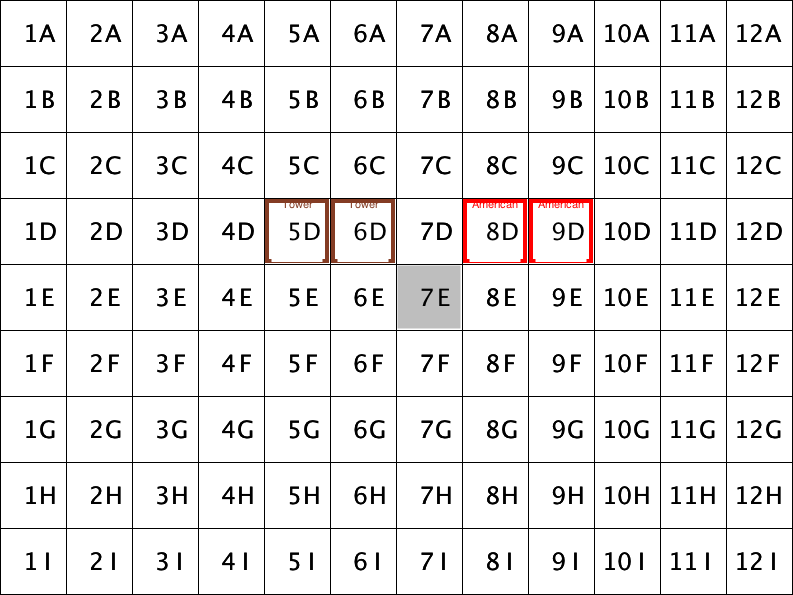

| Important Messages from the Instructors
Saturday, April 27th, 2013
The End
Thanks everyone for a great semester. As always, I enjoyed teaching "Hell"
and I hope you will be able to distill your intensive work into useful
lessons (see below). Some of you expressed your desire to sit down with me
for a chat about life and software once the finals are over. You are
absolutely welcome to do so. Send me an email to set up a time (I am
over-booked thru the end of May). You are also welcome to send me
email if you wish to reflect on the course and your experiences.
In the meantime, relax, enjoy your new-found spare time, and keep
developing and "reading" software. It is the best way to hone your
skills.
Friday, April 26th, 2013
From what I can tell, only one pair engaged my server yesterday. I will
leave it open for the rest of the day.
Thursday, April 25th, 2013
I have temporarily put my desktop machine on CCIS X at 192.168.21.178.
It runs an Acquire server on port 51234 that waits for four (4) Acquire
players and then runs a complete Acquire game. I recommend you write a
script that signs up four players at once so that you can test your
protocol.
Thursday, April 25th, 2013
"I didn't have time to do this the right way"
How often do I hear this sentence? And it always ends in "and therefore it
doesn't work (well)."
What [student] programmers don't understand is that they didn't have time
because they didn't do it the right way. They constantly confuse cause and
effect.
When a programmer skips unit tests for any component, should the
programmer be surprised to discover that it doesn't work properly?
What takes more time? To write the tests in the first place or to find the
cause of the problem via debugging? Good debugging requires that the
programmer writes the tests anyway.
When a programmer rushes headlong into coding a module without stopping to
wonder about the interface and possible use cases, should the programmer
be surprised to find out that the module causes others -- including him or
her at some later time -- to program around the interface's weaknesses? Or
that the interface causes an undue number of "deep copying" to happen?
Does it really take less time to study possible use cases for an interface
instead of creating hacks to get around it?
When a programmer fails to document an interface of a
function/class/module and thus forces himself/herself to read the code
every time the component is to be used? Doesn't this cause a loss of time?
As Barry Boehm said a long time ago, the later you discover a problem, the
more it costs. If you skip a step in the development of your software, you
will regret it later -- and you will pay for it with extra time. Check for
"I saved myself an hour of thinking with a
week of debugging."
It is true. You didn't complete this assignment/task/job properly. But
your failure is not due to a lack of time. Your lack of time is
due to your decision to go about it the wrong way.
Wednesday, April 24th, 2013
Here is the schedule for the final code walks:
| Friday, April 19 @ WVH 166 |
|---|
| Time | Presenters |
| 11:00am | Sarah, Jim |
| 12:00pm | |
| 01:30pm | Spencer, Chris |
| 02:30pm | |
| 03:00pm | Ryan, Scott |
| 04:00pm | |
| 05:00pm | Fahad, Prabesh |
We will run the competition from 6:00pm to 7:00pm.
I will open up a server on my desktop tomorrow so that you can test your
players' adherence to the protocol.
Tuesday, April 23rd, 2013
As it turns out, at least one pair used the take turn
information as is, so I read the report below to get an idea
of how common bugs in protocols come about (tcp suffers from the same
kind of bug) but ignore the reinterpretation of the
protocol.
A Bug in the Protocol? A Change in Interpretation!
Yesterday I discovered a significant problem with the Acquire remote
protocol. I am surprised that nobody else has encountered this problem.
Diagnosis When the server sends a take turn
message, it includes the current state of the board and players. These two
pieces of data do not represent the entire state of the
game. Specifically, the message fails to include data about the resources
(tiles, shares) that failed players retained.
Symptoms If a player/strategy uses just the data in a
take turn message, it may determine that the banker has certain
shares in its possession that in reality belong to failed players. As a
result, it may decide to buy shares that are no longer available, which
from the perspective of the server, violates the rules of the game. I
noticed some players failed for this reason in our first attempt to run a
tournament.
It is not a problem In principle, a player can deduce the
necessary information across the history of an Acquire game. Specifically,
since every player receives a notification about the state of the game
after each turn, it can determine which players dropped out from the
difference between the last two states it received. It is quite possible
that some of you implemented your players with this strategy in mind.
It is a problem At the same time, the take turn
message violates the spirit of the protocol, which clearly intends to
supply a complete picture of the game state at every step. [I had
originally intended to send a complete state along wherever you see
State and Turn in the protocol. My local protocol
implements this design, which is why the problem could only surface in the
integration step of the remote game, not in any local test suite.]
I have therefore decided to re-interpret the protocol and
to change my server to send along the complete list of
players in a take turn message, including those that
have dropped out. Syntactically, this re-interpretation does not require
any change to the protocol, except that the take turn message
no longer represents the order in which players take turns.
Disadvantages If any of your strategies rely on the
faithful representation of the sequence of players in the
take turn message, this re-interpretation of the protocol will
put your player at a disadvantage. If so, send me the relevant code
snippet from your player/strategy and I will undo this change to my
server.
Monday, April 22nd, 2013
For undergraduate students: Ms. Plekins informed me that the College has
already transferred credit for 6515 to Software Development. You do not
have to contact her about transferring credit.
Wednesday, April 17th, 2013
The final code walks will take place on Friday (26 April) from
10am to 6pm. I will post another sign-up sheet on our glass door.
Sorry for any inconvenience, but this is the only room I could get for a
day and I got it only last night.
In fairness to off-campus students, I am forced to cancel today's code
walk due to the lock-down. I will reschedule for a day next week. Due to
the dean search, this could be as late as Thursday or Friday.
We will not test your software during the final code walk sessions.
| Thursday, April 18 | Friday, April 19 |
|---|
| WVH 166 | WVH 366 |
|---|
| Time | Presenters |
| 10:00am | Forrest, Josh |
| 11:00am | Kyle |
| 12:00pm | |
| 02:30pm | Lori, Jake |
| 03:30pm | Jeff, Wensheng |
| 04:30pm | |
| 05:30pm | |
| 06:30pm | Deanna and Patrick |
|
| Time | Presenters |
| 10:00am | |
| 11:00am | Ryan, Scott |
| 12:00pm | |
| 01:30pm | Spencer, Chris |
| 02:30pm | Sarah, Jim |
| 03:30pm | Josh, James |
| 04:30pm | Fahad, Prabesh |
| 05:30pm | Nishant, Jayant |
|
Wednesday, April 17th, 2013
Last night I forgot to remind undergraduates about credit for 'software
development.' Since this is an MS-level course, credit is not automatic.
If you wish to substitute this course for 'software dev', you will need to
talk to Ms. Melissa Peikin in co-op.
As for feedback -- mutual if you so wish -- I will not have time to go
into details during code walks. If you would like to chat about your
performance (as opposed to getting a grade) or the course/teaching, feel
free to send me email or to stop by my office for a chat. (Do send email
to make sure I am in.)
Finally, remember to send email if you don't think we should run a game
competition after the finals are over.
Wednesday, April 17th, 2013
Please take a look at the primitives for sending and receiving
Acquire messages. If the messages are not in appropriate shape, your
game server and client players cannot interact with others. If you think
any one of my messages does not live up to the specified protocol, let me
know as soon as possible.
Tuesday, April 16th, 2013
Remember that tonight's meeting is in WVH 366 and starts late (6:15pm).
Monday, April 15th, 2013
The sign-up sheet for final code walks has been out since Wednesday last
week. Please do sign up.
| A student asks ... | ... I answer |
|---|
|
Do we need to commit our super-duper winning strategies tonight?
|
No, you may work on them until tomorrow evening and indeed, you may work
on them during the tournament.
|
|
Should the close tag for Players be spelled correctly (with an "s")?
|
Yes!
|
|
Does the administrator hand out a bonus for hotel chains that don't exist
on the board (but player holds shares with price)?
|
No.
|
|
Does the administrator buy back shares for hotel chains that don't exist
on the board (but player holds shares with price)?
|
No.
|
|
May we assume that states lists players in turn order?
|
Yes, on take-turn, my server will send states listing the current player
first and the remaining players in turn order.
|
Friday, April 12th, 2013
| Nobody asked but ... | ... I respond anyways |
|---|
|
Can we modify the linker code from project 12?
|
No, it is best to write this small configuration "script" from scratch
and to separate it from your remote players and administrators. In other
words, you have permission to check in four new files not just two.
|
|
What does the "linker" code on the game administration side compute now?
|
It creates an administrator, listens on a specifiable port for a
specifiable number of player connections, and creates remote players that
sign up with the administrator. When these players have connected, it
tells the administrator to run an Acquire game.
|
|
What does the "linker" code on the player side compute now?
|
It creates a player and a remote administrator. As the former fires up,
it signs up with the latter, which connects to a specifiable TCP address
at a specifiable port.
|
Thursday, April 4th, 2013
I revised the specification of the sign-up step somewhat.
Given our ultimate goal, players must know about the administrator, but
the latter cannot know about players. Hence, a sign-up step must include
the transmission of some information about the player itself from the
player to the administrator. My revised protocol assumes that the player
hands over a reference to itself.
| A student asks ... | ... I answer |
|---|
|
How does the administrator compute the final score?
|
See the Acquire rules (original or revised).
|
|
How does the share buy-back work during mergers?
|
A player receives the price-per-share before the merger event. Selling
shares rewards the player for any growth that may have occurred since it
bought them. At the same time, the player gives up any future property
rights to this hotel chain.
|
Wednesday, April 3rd, 2013
second version: OO version of 'suspension'
Since the manipulation of suspended trees appears to cause problems, I
have rewritten my tree implementation so that it
is Java-like OO style (modulo types). The API remains the same as
before but the functions send messages to objects. One kind of object
manipulates a list of structs, which would be what you might use in C++ or
C#.
To enable a direct comparison, I have also posted
the functional version of my tree code.
Wednesday, April 3rd, 2013
The votes are in, and the table below displays the results. To give you
and idea of how I personally view these performance
levels, I have added a column that specifies my numeric grades for these
symbols. Compare these levels so you learn to calibrate your performance
and those of others.
| symbolic grade | your choice | my choice |
|---|
| ok+ | 99 | 90 |
| ok | 90 | 80 |
| ok- | 81 | 70 |
| zero | 54 | 50 |
We will use your choices to translate the grades for code
walks and panel participation into numeric grades. For the final code walk,
you will receive a numeric grade.
Monday, April 1st, 2013
Jake and Lori discovered last night that the project 10 due date was
mistakenly stated as 4/02 midnight. As always, the project is due on
Monday 4/01 midnight.
Saturday, March 30th, 2013
I was asked to publish the revised set of Acquire instructions in one
place. While such a request does not correspond to industrial reality,
I have done so. The revised rules mark up in red all additions. Irrelevant
pieces have simply been cut.
I have also clarified the test harness specification.
Thursday, March 28th, 2013
| A student asks ... | ... I answer |
|---|
|
May a growing a hotel or merging hotels take place if the newly placed
tile were to connect a region of unassociated tiles to hotels?
|
No. See improved formulation of problem 10.
|
|
May we change arbitrary pieces of code for Task 1 in Project 10?
|
No.
You are to demonstrate with Task 1 that your code base is maintained in a
way that allows small change requests to be realized with small changes to a
small number of files. Do not change more code than the change requests
induce.
The point of assigning task 3/project 8 and giving two weeks for project 9
was to give you plenty of time to bring your code base in sync with the
published test cases.
You will get another chance to prepare your code base for the final code
walk.
If your code base currently does not run, describe bug reports and
resolutions in your README file.
|
|
A Feb 3 entry on the blog states that players may connect two existing
hotels even if the newly placed tile connects to an unassociated region
(of one or more tiles). Is this ruling still in place?
|
No. Your players may no longer connect such hotels. In particular, if you
are given this board:

your player may no longer merge the two hotels.
Thanks to Spencer, Chris, Patrick and Deanna for catching this inconsistency between the old and new rules. |
|
For Task 2, #2 seems to be missing the information for which tile was
handed out to the player after his/her turn is over.
|
Correct. See corrected statement.
|
|
In your wording for the new founding rule, you state that a player 'may'
found a hotel. Does that imply that the player has a choice?
|
No, that's a typo. See corrected statement.
|
Wednesday, March 27th, 2013
Last night's code walks suggest serious flaws in some students' thinking
about program design. Fundamentals I and II/PDP I teach how to design
programs systematically, starting with a careful design of a data
representation of the information in the world of interest. I am avoiding
the term "real" here because really good programming tasks do not involve
"real" world information but information from the abstract/Platonic realm
-- for example, decision trees for games or aircraft control or
self-driving cars or intelligent bomb-destroying robots.
As I explained in my lecture on design patterns, the very same ideas
emerged from the study of successful, easily maintainable program
designs. In short, "theory" and "practice" coincide.
So, when you do design a tree, I would at a minimum expect a diagram that
lays out the key variants of data in the tree and their relationship:
ITree <=========================+
| |
| |
^ |
| |
+--------------------+ |
| | |
FinalState Intermediate |
decisions :: [Action x ITree]
This simplistic diagram assumes that you recognize a distinction among two
distinct kind of nodes in the tree: those that represent final states
where no further action can be taken and those where a player may make
decision.
When confronted with a data definition for tree-shaped (or graph) such
as the above you need to ask how large these trees really get and whether
you want to store the whole tree in your program or whether you can
suspend the generation of a part of the tree until the rest of the
program must access these parts. To delay a computation, programming
languages essentially offer one and only one mechanism: called function
or method or generator in various contexts. The data constructor for this
mechanism is -> and describes what kind of data is used as input and
what it computes (whether this is implicit, as in generators or Java's
self, or explicit in Python's lambdas).
Since in our world the widest branching concerns the decision of which
shares to buy, it is natural to create a method that suspends over this
point in the tree:
ITree <============================+
| |
| |
^ |
| |
+--------------------+ |
| | |
FinalState Intermediate |
decision : [Share] -> [Action x ITree]
You can get from the first diagram to the second in two ways. You either
remember from Fundamentals I/PDP that functions represent large
collections of data and decisions or you look in the design patterns book
and find that you need a combination of the composite (tree shapes) and
command pattern (suspension of action).
If you want an interesting career in a dynamic and exciting field such as
engineering software, stumbling across a working program does not
work. The surviving companies gain an advantage by employing high quality
software construction methods for software on the critical path and
keeping employees from this critical path who can't abide by such
practices. Based on what I know, I consider this assignment a level III
problem at Google or Amazon for "critical path" software engineers, and I
do understand the challenges of this assignment, which is why I arranged
it to be out for a two-week period.
Monday, March 25th, 2013
On April 16, the last day of class, we will run a competition among your
automated Acquire players. The primary purpose is to give you a chance to
integrate your remote components into the overall system. The secondary
purpose is to give competitive natures in this class a chance to
experiment with game planning. You will get one week to debug your players
and to hone your players' strategies. The winning pair will receive a
bonus of 50 points for the project grade component; this is approximately
one week's worth of points.
Sunday, March 17th, 2013
| A student asks ... | ... I answer |
|---|
|
Is the tree exploration supposed to compute a sum of all possibilities,
even if the same merger can happen at two different levels of depth?
|
Yes.
|
|
What does the purchase policy mean?
|
The purchase policy specifies a finite series of orders (of stocks) that
the players wish to make. If these orders cannot be satisfied, the player
won't choose them. Yes, this is naive and players tend to use more
sophisticated strategies to explore game trees.
|
|
Do the share buying strategies apply to every player in the game tree?
|
Yes.
|
|
When a player is removed from the game for cheating, are its shares and
tiles returned to the administrator or are they unavailable for the rest
of the game?
|
The tiles and shares become unavailable.
|
Tuesday, March 12th, 2013
Tonight (March 12) we will again conduct an integration session. Asumu will add
a folder project8/integration to your SVN repository with the
following content:
-
xrun is a Racket script that runs a modified version of your
game-tester program on the supplied tests;
-
largest-alpha/ is a folder with tests like those for
game-tester;
-
strategy/ is a folder with the two strategy implementations that
you "ordered" with your specifications.
The folder also comes with xml-diff, an auxiliary XML diff
script, tailored to our task that xrun uses. You may safely
ignore it.
Task To prepare the integration of the new players,
-
copy your game-tester program into this new folder;
-
modify game-tester so that it runs only players that use the
largest-alpha strategy.
Now integrate the implementation of largest-alpha into your
player. In principle, this should be a function/method call.
When your program compiles, run
./xrun
to find out how many test cases your program passes. Try to get all of
them to pass eventually with the code that you received.
To run individual tests, say, the first one, run this at the Linux prompt:
$ ./game-tester < largest-alpha/in0.xml | ./xdiff-xml - largest-alpha/out0.xml
Substitute 1 or 2 for 0 to run the other two
tests. To run your game-tester on just the test input, just use
the part to the left of the Unix pipe.
Tuesday, March 12th, 2013
I highly recommend you attend the following talk. The College is thinking
about hiring people such as Miller in Seattle to teach software
engineering courses for students on the Boston campus.
A Day in the Life of a Google Software Engineer, or, Life After Graduation
Jim Miller - Staff Software Engineer at Google
Tuesday, March 12th, 1:35pm @ WVH 108
What's a day like for a software engineer at Google? How does it compare to
a company like Microsoft? What's the difference between doing industrial
research, University research, or corporate development? How easy is it to
move from one role to another, one job to another, one company to another,
one industry to another? How much does a software developer use skills
learned as an undergraduate, a PhD student, or a professor? What did you
wish you'd taken time to learn but didn't? Have you ever wondered about any
of these things? Come by for an open, informal, and question-driven
discussion of life after graduation ("in the real world"?). And bring your
questions!
Bio: Jim Miller is a Staff Software Engineer at Google's Seattle office,
working on their cloud platform offerings. Prior to that, Jim spent over
ten years as an architect on Microsoft's Common Language Runtime, and three
years as director of the World Wide Web Consortium's Technology and Society
Domain where he worked on such issues as Internet commerce, security, child
protection, and privacy protection. He's taught at Brandeis University,
MIT, and internally for a number of computer companies. He holds a PhD from
MIT in Computer Science, an MEng from the University of Alaska (Fairbanks)
in Engineering Management, and an SB from MIT in Materials Science and
Engineering. In his spare time, Jim has been a professional opera
chorister, and is currently an amateur singer, commuting bicyclist and avid
knitter.
Monday, March 11th, 2013
| A student asks ... | ... I answer |
|---|
|
How do the two strategies (largest-alpha and smallest-anti) choose which
hotel to found?
|
Since foundings aren't mentioned, strategies continue to pick the
alphabetically first hotel so that we can continue to run deterministic
tests.
|
|
How do the two strategies (largest-alpha and smallest-anti) choose which
hotel to be the acquirer when there is a tie for maximum hotel size?
|
Since mergers aren't mentioned, strategies continue to pick the
alphabetically first hotel.
|
|
What does "choose as many shares as possible in alphabetical order" mean?
|
Order the remaining shares in alphabetical order and buy down this list
until you have created the maximal, currently legal purchase order.
|
Friday, March 8th, 2013
Your memos bring up one recurring argument that lacks serious
substantiation, so I thought I would address it in a separate post.
The basic argument is that "code base A consists of 1,000 lines of code
while code base B is 4,000 lines long." These numbers are
plain meaningless. To make the point, let me provide some numbers about my
code base:
-
The way your tools count, my code base consists of 1,250 lines of code.
-
I proudly add that you will find an additional 750 lines of test code
inside these modules. That is over 50% of the lines of proper code.
-
Beyond code and tests, I have some 250 lines of comments that specify
signatures, purpose statements, and some examples for complex functions.
This count of 2,250 lines does not include completely optional contracts;
they contribute some 700 lines (code and comments) so that the actual
total is around 3,000 lines. Here is an example so that you get an idea of
what my contracts check:
[merging-which/t
;; which hotels are merged if player places a tile at t on board b
(->i ((b board?) (t tile?))
#:pre/name (b t) "merger spot" (eq? (what-kind-of-spot/t b t) MERGING)
(result (and/c cons? (listof (list/c hotel? natural-number/c)) (sorted >= #:key second))))]
This function determines which hotels are involved in a merger and promises
a non-empty list of hotels and sizes, sorted in decreasing order.
In this context, I can conduct a thought experiment concerning two
distinct code bases. First, I could easily present you with the 1,500
lines of code that make up the code proper and their comments. Based on my
superficial code inspections, this base may come close to what many of you
think is a small code base. Second, I could present you all 3,000 lines of
code. I guarantee you that working with the first code base you would miss
the tests that illustrate the workings of functions and you would miss the
guarantees you get from contracts. Both cut down debugging time to a tiny
fraction of my development effort. In other words, as you would start to
manipulate the first, small code base, you would dearly miss the other
1,500 lines. A concise code base is good, but it is not an argument in
itself for the quality of the code base.
Thursday, March 7th, 2013
I have released a draft version of project 9. My lecture on Tuesday will
introduce the notion of a game tree, but you may wish to start thinking
about the assignment now.
Monday, March 4th, 2013
From the Mir Specification for
Ubuntu::
Finally, we want to emphasize our focus on quality and enforce a test-driven
development approach for the display server component. We require every
component of the system to be under test to ensure its correct functionality
and to provide us with a test harness that allows us to evolve the system
efficiently and safely.
Friday, March 1st, 2013
Every pair should now have a folder with the interface specification for
strategies.
Several pairs turned in nothing that remotely resembles a worked-out
interface. Instead their README points to the interface that they used. In
those cases, we (1) subtracted a substantial number of points from your
project 7 score and (2) literally copied the "interface" portion of these
files into project folders.
When you attempt to implement an interface, you may need to tease out
unwritten assumptions and you may wish to point out problems with the
interface specification and/or code base that goes with it. Consider this
part of your task as a code walk, except that the authors of the code have
already left the company. -- Example: your interface may not hand over
information about the board directly. Instead it may provide a complete
history of all turns. Feel free to critique this design but since all the
information exists, go ahead and synthesize a board representation from
this history.
Next, you may need to make assumptions about the context. Add those to
your code walk notes. This may include the addition of code snippets that
should really be defined somewhere else in the code base. Add minimal code
snippets to the component to make it syntactically correct, but comment
them properly so that your task masters in the US can easily fix the
problem. -- Example: you may assume that the code base supplies an
alphabetically sorted list of hotels but there is no evidence. Feel free
to add a code snippet like this one
;; -- We expect the code base to supply some constant that
;; specifies the list of all hotel names in alphabetical order.
(define ALL-COMPANY-NAMES '())
to the strategy components that you implement. This communicates to the
specifier what will need to be changed/supplied for code integration.
In addition to the code, you should therefore supply a
comment.txt
file in which you collect your notes on the code and your assumptions.
Organize this file in the form of a code walk memo but use PLAIN TEXT
not HTML.
Thursday, February 28th, 2013
Running the test fest proved difficult this time. Several
misunderstandings crept in, and some old bugs survived in
your code base that should have been eliminated by test failures from
previous weeks. As a result, only one pair turned in a completely
valid set of tests and only two more passed in a passing test.
Based on my experience with interface specifications and implementations,
this result is not surprising. Fortunately, it appears as if most issues
are easily fixable, assuming your code base lives up to minimal design
recipe expectations. I have therefore added a third task to project 8,
namely, fixing your code base and test cases.
Reminder 1: the merger bonus is paid at the end of the turn, not during a
turn. See red blog post from 10 days ago.
Reminder 2: the initial state is included in the sequence of states. That
is, your output sequence must start after the tiles have been assigned and
before the first tile is placed. See blog post from Sunday 2/24.
Reminder 3: the specification for rounds and cash is "natural number."
Some test cases contain cash elements with an amount of "6000.0",
which the string to number conversions in many languages would interpret
as a double, not an integer. Use the normal representation of natural
numbers (counting numbers) that you know from grade school.
Reminder 4: Use your language's XML libraries to read and write XML
elements. We found syntactically illegal XML in some expected outputs.
Reminder 5: Use simple test cases to establish basic correctness
criteria of your tests, i.e., tests that you could write by hand. For
example, the "rounds" allows the specification of short
games:
$ ./game-tester.rkt
<run rounds="4">
<player name="a" />
<player name="b" />
<player name="c" />
<player name="d" />
</run>
By the above, a game of four turns generates a sequence of five
(color-coded) states for deterministic players:
<done>
<state>
<board> </board>
<player name="a" cash="6000">
<tile column="1" row="A"> </tile>
<tile column="2" row="A"> </tile>
<tile column="3" row="A"> </tile>
<tile column="4" row="A"> </tile>
<tile column="5" row="A"> </tile>
<tile column="6" row="A"> </tile>
</player>
<player name="b" cash="6000">
<tile column="7" row="A"> </tile>
<tile column="8" row="A"> </tile>
<tile column="9" row="A"> </tile>
<tile column="10" row="A"> </tile>
<tile column="11" row="A"> </tile>
<tile column="12" row="A"> </tile>
</player>
<player name="c" cash="6000">
<tile column="1" row="B"> </tile>
<tile column="2" row="B"> </tile>
<tile column="3" row="B"> </tile>
<tile column="4" row="B"> </tile>
<tile column="5" row="B"> </tile>
<tile column="6" row="B"> </tile>
</player>
<player name="d" cash="6000">
<tile column="7" row="B"> </tile>
<tile column="8" row="B"> </tile>
<tile column="9" row="B"> </tile>
<tile column="10" row="B"> </tile>
<tile column="11" row="B"> </tile>
<tile column="12" row="B"> </tile>
</player>
</state>
<state>
<board> <tile column="1" row="A"> </tile> </board>
<player name="a" cash="5400">
<share name="American" count="3"> </share>
<tile column="2" row="A"> </tile>
<tile column="3" row="A"> </tile>
<tile column="4" row="A"> </tile>
<tile column="5" row="A"> </tile>
<tile column="6" row="A"> </tile>
<tile column="1" row="C"> </tile>
</player>
<player name="b" cash="6000">
<tile column="7" row="A"> </tile>
<tile column="8" row="A"> </tile>
<tile column="9" row="A"> </tile>
<tile column="10" row="A"> </tile>
<tile column="11" row="A"> </tile>
<tile column="12" row="A"> </tile>
</player>
<player name="c" cash="6000">
<tile column="1" row="B"> </tile>
<tile column="2" row="B"> </tile>
<tile column="3" row="B"> </tile>
<tile column="4" row="B"> </tile>
<tile column="5" row="B"> </tile>
<tile column="6" row="B"> </tile>
</player>
<player name="d" cash="6000">
<tile column="7" row="B"> </tile>
<tile column="8" row="B"> </tile>
<tile column="9" row="B"> </tile>
<tile column="10" row="B"> </tile>
<tile column="11" row="B"> </tile>
<tile column="12" row="B"> </tile>
</player>
</state>
<state>
<board>
<tile column="1" row="A"> </tile>
<tile column="7" row="A"> </tile>
</board>
<player name="a" cash="5400">
<share name="American" count="3"> </share>
<tile column="2" row="A"> </tile>
<tile column="3" row="A"> </tile>
<tile column="4" row="A"> </tile>
<tile column="5" row="A"> </tile>
<tile column="6" row="A"> </tile>
<tile column="1" row="C"> </tile>
</player>
<player name="b" cash="5400">
<share name="American" count="3"> </share>
<tile column="8" row="A"> </tile>
<tile column="9" row="A"> </tile>
<tile column="10" row="A"> </tile>
<tile column="11" row="A"> </tile>
<tile column="12" row="A"> </tile>
<tile column="2" row="C"> </tile>
</player>
<player name="c" cash="6000">
<tile column="1" row="B"> </tile>
<tile column="2" row="B"> </tile>
<tile column="3" row="B"> </tile>
<tile column="4" row="B"> </tile>
<tile column="5" row="B"> </tile>
<tile column="6" row="B"> </tile>
</player>
<player name="d" cash="6000">
<tile column="7" row="B"> </tile>
<tile column="8" row="B"> </tile>
<tile column="9" row="B"> </tile>
<tile column="10" row="B"> </tile>
<tile column="11" row="B"> </tile>
<tile column="12" row="B"> </tile>
</player>
</state>
<state>
<board>
<tile column="7" row="A"> </tile>
<hotel name="American">
<tile column="1" row="A"> </tile>
<tile column="1" row="B"> </tile>
</hotel>
</board>
<player name="a" cash="5400">
<share name="American" count="3"> </share>
<tile column="2" row="A"> </tile>
<tile column="3" row="A"> </tile>
<tile column="4" row="A"> </tile>
<tile column="5" row="A"> </tile>
<tile column="6" row="A"> </tile>
<tile column="1" row="C"> </tile>
</player>
<player name="b" cash="5400">
<share name="American" count="3"> </share>
<tile column="8" row="A"> </tile>
<tile column="9" row="A"> </tile>
<tile column="10" row="A"> </tile>
<tile column="11" row="A"> </tile>
<tile column="12" row="A"> </tile>
<tile column="2" row="C"> </tile>
</player>
<player name="c" cash="5100">
<share name="American" count="4"> </share>
<tile column="2" row="B"> </tile>
<tile column="3" row="B"> </tile>
<tile column="4" row="B"> </tile>
<tile column="5" row="B"> </tile>
<tile column="6" row="B"> </tile>
<tile column="3" row="C"> </tile>
</player>
<player name="d" cash="6000">
<tile column="7" row="B"> </tile>
<tile column="8" row="B"> </tile>
<tile column="9" row="B"> </tile>
<tile column="10" row="B"> </tile>
<tile column="11" row="B"> </tile>
<tile column="12" row="B"> </tile>
</player>
</state>
<state>
<board>
<hotel name="American">
<tile column="1" row="A"> </tile>
<tile column="1" row="B"> </tile>
</hotel>
<hotel name="Continental">
<tile column="7" row="A"> </tile>
<tile column="7" row="B"> </tile>
</hotel>
</board>
<player name="a" cash="5400">
<share name="American" count="3"> </share>
<tile column="2" row="A"> </tile>
<tile column="3" row="A"> </tile>
<tile column="4" row="A"> </tile>
<tile column="5" row="A"> </tile>
<tile column="6" row="A"> </tile>
<tile column="1" row="C"> </tile>
</player>
<player name="b" cash="5400">
<share name="American" count="3"> </share>
<tile column="8" row="A"> </tile>
<tile column="9" row="A"> </tile>
<tile column="10" row="A"> </tile>
<tile column="11" row="A"> </tile>
<tile column="12" row="A"> </tile>
<tile column="2" row="C"> </tile>
</player>
<player name="c" cash="5100">
<share name="American" count="4">
</share>
<tile column="2" row="B"> </tile>
<tile column="3" row="B"> </tile>
<tile column="4" row="B"> </tile>
<tile column="5" row="B"> </tile>
<tile column="6" row="B"> </tile>
<tile column="3" row="C"> </tile>
</player>
<player name="d" cash="5100">
<share name="American" count="3"> </share>
<share name="Continental" count="1"> </share>
<tile column="8" row="B"> </tile>
<tile column="9" row="B"> </tile>
<tile column="10" row="B"> </tile>
<tile column="11" row="B"> </tile>
<tile column="12" row="B"> </tile>
<tile column="4" row="C"> </tile>
</player>
</state>
</done>
Sunday, February 24th, 2013
| A student asks ... | ... I answer |
|---|
|
Should the State sequence include the first state (after the
distribution of tiles)?
|
Yes. Otherwise include states after the player's actions have been
executed.
|
|
Should the State element in the four responses be followed by
... to indicate a sequence?
|
Yes. As the explanation says, the response should contain all
intermediate states.
|
|
Is player-tests the correct name for the tests folder?
|
It is a typo. Please submit as game-tests. (As some of you
realize, my lectures come titles. "Thou shall not copy and paste" is the
title for introducing abstraction in Fundamentals I.)
|
|
Should players receive all six tiles at once when they join the game?
|
Yes. And remember, the tiles get handed out in the tile<=?
order.
|
|
How should we score the game?
|
The series of states should not include the final state. That
is, do not bother to compute the final scores.
|
|
Should players, shares, tiles, and hotels be sorted?
|
You should sort
- players by string<=?
- tiles by tile<=?
- shares in alphabetical order of the name of the hotel
- series of hotels in alphabetical order of the name of the hotel
|
|
Should our graphical board rendering routine run on login-linux?
|
Yes.
|
|
Can our player interface consist of several different function/method
signature to implement a turn?
|
Absolutely but it so happens that with the current rules, such a
complex interface is not needed.
|
|
Can a player buy shares even if it cannot place a tile?
|
Yes.
|
|
Is there a difference between the wording "the game ends if all hotels on
the board are safe" (project 7) and "the game is over when all hotel chains are
safe" (Acquire rules)?
|
The intended meaning of both wording is that there is at least one hotel
chain on the board and all of the hotel chains that are on the board are
safe.
|
Test Cases and Correctness
Two students discovered a mistake in a test case for project 6. That is,
the test case (seems to have) passed the reference implementation even
though it is inconsistent with the rules of the game.
This discrepancy is possible (though not yet confirmed) in this course and
the real world where Q&A departments supply test cases. It is also
possible in Fundamentals I where the authors of code and test are the same
people. As I point out in my instances of F I/PDP, when an inconsistency
shows up between tests (which specify expected behavior) and code (which
specify actual behavior), it is the responsibility of the programmer to
find out whether the problem is due to
- the code
- the test
- both.
In this course it is also possible that you mis-implemented the test
harness, i.e., the bridge between the code and the test specification. In
this case, just write off the test.
Sadly there is the fourth, catastrophic case, when bugs in tests cancel
bugs in code.
Sunday, February 24th, 2013
Someone questioned the implication of my commit analysis, namely, that I
might release the test harness specification only after the homework is
due. There are two answers to this complaint.
First, while I understand that students need to pay attention to other
courses or their day job, you need to understand that programmers always
juggle more than one project. It is important to acquire the self
discipline to contribute to every task something on every day. Deadline
driven programming is bound to lead to catastrophes. Similarly, if the
chart had shown a peak on Saturday or Sunday before the deadline, I might
have accepted the excuse that all of you wish to allocate long blocks of
time to work on the code, because some of you are commuter
students with full-time jobs. But, as the chart
shows, the bulk of the commit is coming in on Monday -- which suggests
deadline driven programming.
Second, projects in the real world do change in the last minute. I
consider it my obligation to simulate this experience for you in your last
course that focuses on programming. As you know by now, I have released
the harness specification by now. Still I reserve the right to change
other specifications as the deadline approaches.
Saturday, February 23rd, 2013
The test results for Project 6 are
available now for your perusal. The tests are available as a
compressed tar bundle.
The result page also contains a histogram of SVN commits relative to the
due date. The graph suggests that I should release the test harness
specification on the morning after the due date and open svn submissions
for one hour after the release.
Wednesday, February 20th, 2013
Rules I have clarified the rules about buying shares. The
"no" for project 5 produced any loss of points because your software
failed one of my test cases, please send me an explanation in email (cc
Asumu). If your explanation is correct, I will restore the point and give
you a bonus point.
Deadline send email to Asumu concerning your partnership
for project 8 and following. The memo concerning the code base selection
will be due with project 8 when you do have to work with the new code
base. Until then, do not study each others' solutions.
Lab books Asumu will check them today and you can pick
them up tomorrow. Please record any meetings in the meantime on loose
sheets of paper and glue them into your book when you get it back.
Tuesday, February 19th, 2013
Please bring along the Design Patterns book if you have one for tonight's
lecture.
Monday, February 18th, 2013
Jeff and Josh have discovered a serious problem with the specification:
While writing our test cases, we discovered what we believe is a problem
with the Project 6 test harness specification. During a Player's turn, they
have the ability to place a tile and subsequently buy stock. If the tile
they choose to place results in a merger, Player's who have stock in hotels
involved in the merger may be paid money if they are a majority or minority
owner. According to the current Acquire rules on the course website, this
payout happens immediately following the merger, and before the Player can
buy stock. Therefore, a Player's ability to buy stock could be changed
based on a merger. However, in the project 6 specification, there is no way
to calculate how much money the current Player may get from a merger, and
therefore the Player's strategy may make an improper decision on what
Stocks to buy.
The rules concerning mergers and the test harness are indeed in conflict.
For now, the resolution of this conflict is that the player places the
tile and buys stock and then and only then the payout
happens. This of course means that a player's stock purchase may influence
the majority owner calculation, but the resolution is the most compatible
with the specification of the test harness.
If you still need additional time to adjust to this resolution, send me
email with an explanation. For valid reasons, I may extend the deadline.
| A student asks ... | ... I answer |
|---|
|
What do the words "its" and "available" refer to?
|
The word "its" refers to the automated player.
The words "available" must be interpreted in context:
- "its .. tiles" can only mean the tiles that the player owns
- "its .. hotels" can only mean the hotels that the player may found
- "its .. shares" could mean two things:
- the shares that the player owns
- the shares that the player could buy
Since the player has no use for its own shares according to the current
rules and since playing a turn may involve the acquisition of shares, the
second alternative is the only feasible one.
|
|
We are given the board and we can calculate the available hotels using the
game board. What is the point of the list of available hotels? Should we
assume that the list of available hotels matches up with the game board?
|
Redundancy. No, the player component should not make such an assumption.
|
|
What is State in Place?
|
Thanks to Patrick and Jayant for discovering this copy-and-paste
mistake.
|
|
Which of the two strategies should we use for the test harness?
|
Your test harness should use the 'ordered' strategy.
|
|
How does the player know how much cash it has to buy shares?
|
Thanks to Ryan and Spencer for discovering this omission.
Fixed in the project. (Time to generate my HTML from my XML schema.)
|
Saturday, February 16th, 2013
I have released the specification of the test harness.
Friday, February 15th, 2013
Thursday, February 14th, 2013
Project 6 now comes with a part 0 to ensure your code organization is
correct. As of project 6, the top-level contains all the code for all
the Acquire components. The project folder contain only the test
harnesses. We may at any point throw away all the test harness code and
request that you build the project from the remaining pieces.
Monday, February 11th, 2013
As many of you noticed, I was wrong about one of the constraints:
It is possible that a single tile connects two different
hotels without merging them.
If you implemented this constraint, please remove it before tonight.
As always the series of requests to the test harness are not necessarily
chronologically related. The point of sending the entire state along with
requests is to make them self-contained.
| A student asks ... | ... I answer |
|---|
|
Should the tiles in XML representation of players appear in some
specific order?
|
Yes, see below. They are supposed to appeared ordered according to tile<=?.
|
|
What should the test harness report when the active player cannot place
any tiles?
|
In this (rare? impossible?) case, your test harness should report an
error.
|
|
What should the test harness do when all stocks of the sole unallocated
hotel chain are already owned by players?
|
In this (rare? impossible?) case, your test harness should report an
error.
|
|
Should the State XML use a specific order for share elements inside of
players?
|
Order shares alphabetically. Drop those with a 0 count.
|
|
How do you test the results of setup and done messages?
|
Use the predicate tile<=?, defined below, to move tiles from
the rule enforcers pool to the players.
|
|
Is the ranking/payout of a merger bonus determined before or after the
merger?
|
This question discovered a typo in the rules. See revised rules.
|
|
What happens to the shares of acquired hotels?
|
The current rules are quiet on that so you must assume that they stay
where they are.
|
|
Can the player end a turn without placing a tile?
|
No, neither your library nor your harness need to discover this
problem. See above.
This design decision can go either way. My own inclination is to design
a library that data-represents the state of the game not the state of
the turn. My designs tend to leave the latter task to the rule enforcer
module, which deals with executing a turn.
In general, remember to figure out where knowledge resides and should
reside. A data representation of the state maps what is "on the table"
to data in your language. Rule enforcements are a separate task.
|
|
Can a player place a tile on an "impossible" spot and how should the
game continue?
|
The question really means whether a state-of-the-game representation
should admit such a transition, and the answer is clearly no because it
creates an invalid state. See above.
|
Sunday, February 10th, 2013
On checking constraints Since the data representation of
states is the central piece in a game, you must ensure that none of your
methods/functions may inject any inconsistency. Thus, while we allowed
inconsistent and physically impossible board representation for Project 4,
this time around your library must ensure that the test harness cannot use
its methods/functions to create an inconsistent game-state
representation.
Here are some sample constraints concerning the state, including the
board:
- no two hotels must have the same name
- no two hotels may touch
-
no unassociated tile may connect to any two distinct hotels though our
rules do allow that a chain of unassociated tiles connect two such
hotels (why? how would such chains come about?)
-
the hotel chains on the board and the hotel chains available to the rule
enforcer must add up to all available hotel chains
-
the players must own a legitimate number of shares per hotel.
Again, these five constraints are samples, and it is your task to
ensure that your data representation and its methods/functions do not
allow the creation or mutation of a state that results in
inconsistent/impossible data representations.
Saturday, February 9th, 2013
Friday, February 8th, 2013
The test results for Project 4 are
available now for your perusal. The tests are available as a
compressed tar bundle.
Fri Feb 8 16:07:03 EST 2013: I have asked Asumu to add
my test suite to the table so that you get additional feedback.
On the results
Your first task is to inspect these results and to learn from the failing
test cases:
-
Your immediate task is to figure out the error(s) in your board
representation and to fix them so that they don't cause failures in the
next test fest. (You should expect that a state representation suffers
from the same flaws as a board representation and more.)
For this test suite, Asumu has accepted empty hotels on a board, even
though a regular game process does not allow for such
hotels. [ But see revised XML specs for project
5.] In contrast, he did not fix the spelling of hotel names, typos
in attribute names, and such. Finally, the grammar makes no allowance for
comments, so Asumu removed them manually. Next time, he will not accept
comments.
Also note that the reference implementation did not
check the legality of the board created from XML. Naturally this will
change for the testing of states and operations on states.
In general, he applied a somewhat looser
standard to this test suite than to the one for graph services in the
interest of getting you results back. (Meaning, he did not subtract as
many points as he could have and, in turn, he did not fix as many flaws as
was possible.)
-
Your long-range task is to learn to come up with the kind of "black box"
tests that your peers came up with. Creating and curating a top-tier test
suite is almost as valuable as creating the software artifact itself.
On test harnesses Once again, let me remind (most of) you
that the purpose of a test harness is to simulate those parts of the
system that are not yet built and/or should not be integrated yet. The
former are often but not always software components of the same system
while the latter could be hardware components (think actuators such as
airplane wings, rocket launchers, telescope batteries, just to mention a
few co-op opportunities that I have encountered over the years).
As such, the harness exists to simulate the surrounding of the library and
to exercise it from this perspective as much as possible. It does
not exist as an object of interest per se. Hence you
should see no need whether it can deal with ill-formed XML, invalid XML,
or other flaws that a typical XML library catches. Always keep in mind
that these test harnesses could be thrown away while the actual components
get integrated into the running system.
Tuesday, February 5th, 2013
I have supplied answers to all questions concerning the rules of Acquire
stated on the memos for project 4. See the description of Acquire.
Project 5 is out. Please read asap in case you need clarifications.
The test results for Project 3 are
available now for your perusal. The tests are available as a
compressed tar bundle.
Monday, February 4th, 2013
Some of you may have noticed a peculiar self-contradiction in project 3.
Recall that Cost is defined as String, a positive real
number in school book decimal notation. Also recall that a
path response comes with a cost attribute. This poses a
problem, however, when you compute a path from some node to itself. The
shortest path is a path that contains no edges; indeed, in many graphs this
may be the only such path from a node to itself. The only feasible
cost for such an edge-free path is 0.0.
The contradiction is then that the cost of an edge must be a positive
number -- it makes no sense to have a cost of 0 for a step --
while the cost of a path can be zero. To avoid this conflict, a software
developer may with to introduce two kinds of cost types to bring across the
difference: EdgeCost, which is a positive real number, and
PathCost, which is a non-negative real number. Unfortunately, most
programming languages do not support these types, so when you implement
these specifications you are stuck with some form of floating point number
type (float, double, long double).
For your homework solution, we accept costs of 0.0..
Sunday, February 3rd, 2013
| A student asks ... | ... I answer |
|---|
|
What does a test harness executable "do"?
|
In general, a test harness exists to connect libraries or components to
external tests. The device is commonly used to build a software context
for the component in anticipation of integration testing. In this
course, test harnesses consume test cases from STDIN (until it closes)
in a data exchange language and produce test outputs to STDOUT. The
comparison -- if needed -- is performed by another tool in a Unix
pipeline.
|
|
What does it mean for a single tile to be "unconnected"?
|
I clarified the word "unconnected" in the Acquire rules. As you can
tell from the fix, English is easy to misuse and yet it is also
possible to use English in a precise fashion.
|
|
What is the meaning of tiles in a board element?
|
The first series of tiles in a board element are not associated
with any hotel on the board. The tiles inside of a hotel
element nested in a board are those that make up the hotel.
|
|
What does "singleton" mean?
|
Singleton means that you can place a tile, and the placement has no
effects on the on-board hotel configuration.
|
|
Should a single, "unassociated" tile on the board be returned to the
pool if placing a tile next to it merges two unrelated hotels?
|
No, leave it as it is.
|
|
A similar question: What should we do when an unassociated, individual
tile on the board is connected to a hotel by the placement of a tile?
|
Nothing. Leave it as it is.
|
Saturday, February 2nd, 2013
I clarified the word "unconnected" in the Acquire rules.
Saturday, February 2nd, 2013
Clarification When there is more than one possible
response for a merger, pick any of the valid ones. This will simplify your
life.
Change in specification: When a response calls for a
sequence of tiles, you must deliver the sequences in lexicographic order
where rows take precedence over columns. Here is the complete predicate:
;; Tile Tile -> Boolean
;; is t1 lexicographically (row before column) below t2?
(module+ test
(check-true (tile<=? (ctile A 1) (ctile A 1)))
(check-true (tile<=? (ctile A 1) (ctile A 2)))
(check-true (tile<=? (ctile A 2) (ctile B 1)))
(check-true (tile<=? (ctile A 2) (ctile B 8)))
(check-false (tile<=? (ctile A 2) (ctile A 1)))
(check-false (tile<=? (ctile C 2) (ctile B 1))))
(define (tile<=? t1 t2)
(or (row<< (tile-row t1) (tile-row t2))
(and (row<= (tile-row t1) (tile-row t2))
(column<= (tile-column t1) (tile-column t2)))))
Wednesday, January 30th, 2013
Thanks to Patrick and Jayant for pointing out some inconsistencies and
missing pieces in the problem statement for week 4. Please reload and
see the purple colored regions.
Tuesday, January 29th, 2013
Monday, January 28th, 2013
| A student asks ... | ... I answer |
|---|
|
Should the deliverable of project 3 be self-contained?
|
You may assume that we run the deliverable in place.
|
|
Are all pieces of XML data (XML elements) separated by newlines?
|
Yes, that was promised. See below.
|
|
Do newlines denote the end of an XML element and the beginning of new one?
|
No, of course not.
|
|
Should we really deliver the executable in the folder for project 2?
|
No, this is a typo and fixed now.
|
Thursday, January 24th, 2013
Some of you may have thought I was off by a decade when I speculated about
DNA computers during my first lecture. Today's Wall Street Journal has a
page 3 article on
storing digital data in dna.
If you can't access the article, here is a PDF
without video. I suspect that data storage and special purpose
functions on data storage will be one of the first commercial applications.
Wednesday, January 23rd, 2013
Sarah L. and Deanna H. pointed out a really bad naming mistake.
Please see the revised problem statement.
| A student asks ... | ... I answer |
|---|
|
Does this server need to be able to maintain multiple tcp connections?
|
The server should be able to deal with multiple
sequential "sessions" of graph management but you do
not need to work about multiple
parallel sessions.
|
|
How much of the code from project 2 may we reuse? --
Can we use both the client and server code we wrote?
|
As much as you'd like. Do be careful about re-using code via
copy-and-modify. More often than not, this creates as many problems as
writing small (a few 100 lines) segments of code from scratch, properly
designed. --
Absolutely. The client, if properly adapted, is a great testing
framework.
|
|
It also seems like graphs always need to be specified by their full
content, not a name, is this intentional?
|
Yes.
|
|
Is there any length limit for the test cases?
|
No.
|
Monday, January 21st, 2013
Tomorrow you will integrate the graph server that you constructed with the
graph library that you requested from Balrumistan. Around 5:00pm, Asumu
will deposit in your project2/server/ folder
-
the library that Balruminstan engineered in response to your
specification, including the revised interface; (recall that Balruminstan
had permission to modify your interface so that it compiles)
-
10 test cases specified as pairs of files named inN.xml and
outN.xml for N in 0, ..., 9;
-
and a Racket script, xdiff-xml, for comparing the xml that your
integrated server produces and the expected output. (The script ignores
the msg attribute of the error elements, normalizes the
order of attributes, and converts strings to numbers where expected.)
You are expected to bring a laptop with the updated SVN repository for
project2. If neither partner owns an appropriate laptop, send
email to Asumu to let us know.
Using these materials you are expected to do your best to integrate the
two components and to get the complete product to run on as many of the
test cases as possible:
$ ./complete-service < inI.xml | ./xdiff-xml outI.xml ‐
for some appropriate I. If you do not have a Linux or Mac laptop, be
prepared to log into one of the Northeastern CCS Linux machines.
Saturday, January 19th, 2013
| A student asks ... | ... I answer |
|---|
|
The XML input you defined in Project 2 doesn't include the Graph Cost
Interval in the Graph Description. How can we check if the inputted
edges fit in the graph's interval?
|
You have discovered a weakness of the API. Work around it.
|
|
We don't know the class names of the library that will be implemented for
us, we simply know which methods we have available to us and the name of
the interface the library supports. Will we have time to hook-up our server
code which uses the library using the specific class names they chose?
|
Yes, you will have an adequate amount of time. Stay tuned.
|
|
The idea of sending many XML elements into our program via stdin
confuses us. Doesn't this violate the XML standard, which calls for one
root element per file and stdin is kind of like one large file?
|
XML is used in many different ways: as a specification language for all
kinds of project tasks, as a data storage language (db), and as a data
exchange language. We use it in the latter sense here. Think of the
graph server as a read-evaluate-print loop in the sense of DrRacket or a
Unix shell; you send in an XML element as a request and it sends a
(possibly invisible) response back. In this context, an XML element is a
form of data that represents both requests and responses.
The graph service design emphasizes this idea even more than the graph
server. There the messages are exchanged over a TCP connection instead
of a stdin/stdout socket. But in essence, these two ideas are the
same. (In Racket, they are identified via the idea of ports.)
|
|
The Java interface specification we received is syntactically incorrect.
Are we allowed to modify it?
|
You may comment out the pieces that prevent compilation.
It is also possible that the problematic piece is trying to
convey an implementation request; you may act on it.
|
|
Does joining a graph mean we need to add edges?
|
The two graphs have disjoint nodes. Which edges would you want to add?
No. (Sometimes such a 'join' operation is called a 'union' operation.)
|
|
Is the graph supposed to be directed?
|
Yes.
|
|
Can two nodes be connected multiple times in the same direction?
|
Yes.
|
|
Will each piece of XML data arrive on a separate line?
(Followed by a lot of whining about how Java's library
is bad at parsing XML and how much work it would be to
parse XML that arrives as part of a line.)
|
It turns that people who know how to write parsers will not worry one
bit or one parenthesis about whether a piece of XML data comes on one
line or two or ten or a part of a line. It is however the case that the
people who design XML libraries for recent languages have forgotten what
we figured out in the late 1950s and practiced for the last 60 years.
You may assume that all pieces of XML data are separates by newlines for the sake of badly written libraries.
|
Wednesday, January 16th, 2013
As most of you noticed, the material for project 2 has been deposited in
your svn repositories.
Do not send me email without CCing your partner.
Tuesday, January 15th, 2013
The idea of code reviews is due to researchers at IBM Watson, a research
lab in upstate NY, and quickly migrated from the lab to development shops.
Here is a list of papers that discuss specifics, just in case you ever
wish to track down the intellectual ideas behind code walks and
evaluations of their effectiveness:
- Fagan. Design and code inspections to reduce errors in program development. IBM Syst. J. 3. 1976
- Fagan. Advances in software inspection. IEEE ToSE 12(7). 1986
- Russel. Experience with inspection in ultralarge-scale developments. IEEE Software. Jan 1991.
- Weller. Lessons from three years of inspection data. IEEE Software. Sep 1993.
- NASA. Software Formal Inspections Guidebook.
Pair programming is old and emerged in many different settings over the
last three decades. A few years ago, someone actually wrote a
dissertation on the idea, investigating all kinds of aspects and
collecting the basic case in a book:
Laurie Williams and Robert Kessler. Pair Programming Illuminated. Addison Wesley.
If you ever wish to advocate pair programming at some place of employment
or you just want to know more, the book is an easy read and easily
distilled into a presentation.
Saturday, January 12th, 2013
| A student asks ... | ... I answer |
|---|
| Does the triangle inequality description concerning cost labels
suffer from typos? |
Yes. They are now fixed; see purple color. |
Should the memo be buzz word filled because it goes to "upper management"?
|
No. Assume that "management" refers to Asumu and "upper management" to
myself. That is, both levels are technical competent but "upper" is less
up-to-date than "management" on the latest details of teenage-heartbreak
languages and IDEs.
|
|
What does "base line" mean?
|
The term "base line" refers to the distance between two lines.
|
|
What does "letter" refer to?
|
The word "letter" refers to the size of the paper; two other common sizes
are "legal" and "a4".
|
Saturday, January 12th, 2013
Here is the assignment of svn repositories to pairs:
- pair000: Ali Ahmad, Prabesh Devkota
- pair001: Patrick Lannigan, Jayant Jitesh
- pair002: Spencer Florence, Ryan Pless
- pair003: Scott Lindeman, Forrest Bice
- pair004: Joshua Coates, Kyle Phelps
- pair005: Jim Shargo, Lori Monteleone
- pair006: Nishant Agarwal, Fahad Mohammed
- pair007: Chris Jordan, Mao Wensheng
- pair008: James Steinberg, Jacob Wood
- pair009: Sarah Laplante, Socheavy Heng
- pair010: Jeff Wallace, Josh Caron
Friday, January 11th, 2013
You may not collaborate outside of your current partnership. The goal of
the class is to learn to communicate about technical ideas, and to direct
this learning process, I am forcing communication channels to go thru
Asumu and myself. Do direct mail to both of us.
A student asks what a cost interval is. The assignment specifies
that "[t]he edges of the graph are labeled with a traversal cost", meaning
each edge is labeled with some number. The cost interval specifies the low
and the high cost across all edges in the graph.
Another student asks about the purpose statements for the methods or
functions. These statements may assume the existence of additional
methods; they may even defined auxiliary classes and methods or
functions.
Thursday, January 10th, 2013
Asumu has written up a quick guide to SVN. It is available as a tab in the
project section. I realize that some of you may have used version control
repository but not svn. If you get stuck, do seek help from Asumu or
myself.
During my first lecture I mentioned two books that aren't listed on the
web site:
- Fred Brooks, The Mythical Man Month
- Kent Beck, Extreme Programming Explained
The first is a classic, and every reflective, thinking software engineer
should read it for its anecdotal value (and should know which bits have
become irrelevant). The second is a typical "guru speaks to programmers"
book; it explains some of the ideas behind the "agile" programming
approach and is more accessible than the "manifesto".
Wednesday, January 9th, 2013
A student asks about the best way to cite source material in your memo.
If you use excerpts (and you are welcome to do so) from books, articles
(on-line or paper), the proper actions are
-
to use the proper AE quotation marks to mark the material and to add a
citation marker
-
to have a list of citations at the bottom of your memo. Label the list
"bibliography". In your world, an entry in a bibliography needs just
enough information to locate the material unambiguously.
Even if you don't use excerpts but you rely on some readings, you should
list those in your memo. That way you supply your manager with pointers to
additional background knowledge and you avoid questions concerning
plagiarism.
Keep in mind if you "steal" text for your memo and your boss passes it on
to "upper management", both of you will be blamed if it is discovered but
you will experience the actual consequences.
Monday, December 31st, 2012
Welcome.
It is time to get started, and this means for you that you must start
working on your projects and assignments. This course is a lot of work
and aims to teach you a lot by doing. If you stay on top of your work, it
is manageable; otherwise the work will overwhelm you. Don't hesitate to
ask for help when you get the feeling of being lost.
Good luck.
|
|
{kind=link}
{kind=link}